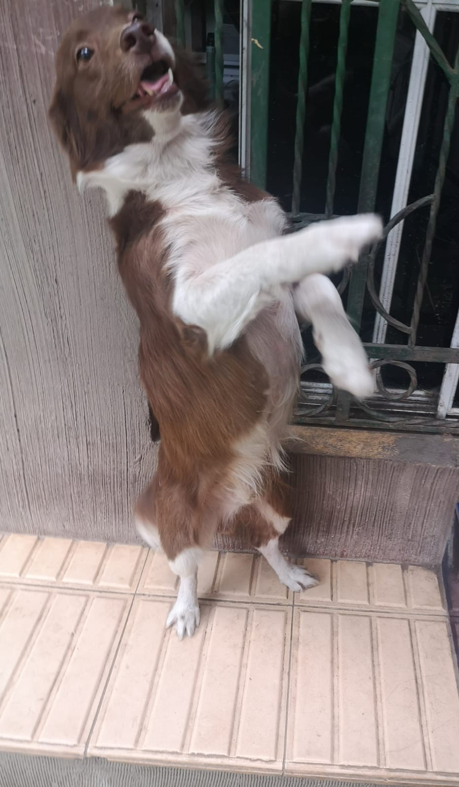

Historia
en 2020 una familia tenia un perro llamado snoopy que era bastante bonito sin embargo en ocasiones pasaba frio y surgio una idea. decidieron tejer un pequeño sueter para el y al ver los rsultados vieron una oportunidad de negocios unica, decidieron empezar una cadena de cosmeticos para perros principalmente la ropa personalizada. despues del exito que fue la tienda en ventas siguieron avanzando y sacando nuevos productos siendo ahora la tienda numero 1 en el pais en venta de cosmeticos de perros.